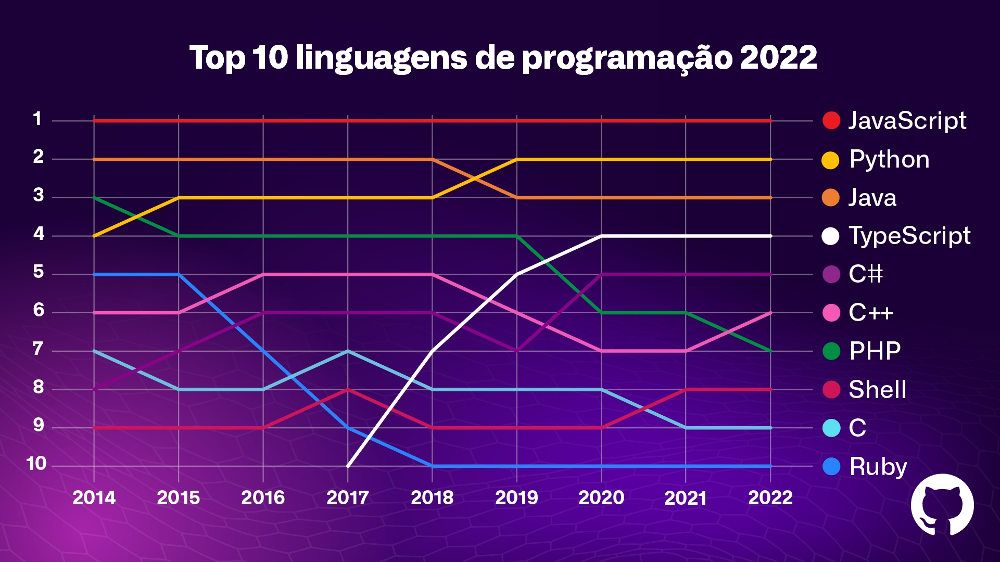

Java: O que é e como começar nesse ramo
Escrito por Leonardo Ciardi - Atualizado em 08/04/24

Java é uma linguagem de programação de propósito geral, conhecida por sua versatilidade e ampla aplicação em diversos setores da tecnologia. Criada pela Sun Microsystems (agora pertencente à Oracle Corporation) na década de 1990, Java rapidamente se tornou uma das linguagens mais utilizadas no mundo do desenvolvimento de software
Características Principais
Uma das características marcantes do Java é sua portabilidade. Isso significa que os programas escritos em Java podem ser executados em diferentes plataformas, como Windows, macOS e Linux, sem a necessidade de alterações significativas no código-fonte. Isso é possível graças à máquina virtual Java (JVM), que atua como uma camada intermediária entre o código Java e o sistema operacional subjacente.
Além da portabilidade, Java é conhecida por sua sintaxe simples e intuitiva, tornando-a acessível para desenvolvedores iniciantes e experientes. A linguagem oferece suporte a diversos paradigmas de programação, como orientação a objetos, programação estruturada e funcional.
Aplicações e Mercado
No contexto do mercado de trabalho, o Java continua sendo uma habilidade altamente valorizada. Muitas empresas, especialmente aquelas que desenvolvem aplicativos empresariais, sistemas financeiros e soluções para a web, buscam profissionais com experiência em Java devido à sua confiabilidade, desempenho e escalabilidade.
Gráfico das linguagens de programação mais utilizadas ao longo dos anos.
Aprendizado e Desenvolvimento
Se você está interessado em ingressar no mundo da programação ou expandir seus conhecimentos, aprender Java pode ser uma excelente escolha. Com uma base sólida em Java, você estará preparado para enfrentar desafios de desenvolvimento de software em diversos cenários e contribuir para projetos significativos.
Conclusão
Java continua sendo uma das linguagens mais influentes e utilizadas no mundo da tecnologia. Sua versatilidade, portabilidade e robustez a tornam uma opção valiosa para desenvolvedores e empresas que buscam soluções confiáveis e escaláveis.

O logo do Java, uma xícara de café fumegante, simboliza o caráter energético e robusto da linguagem